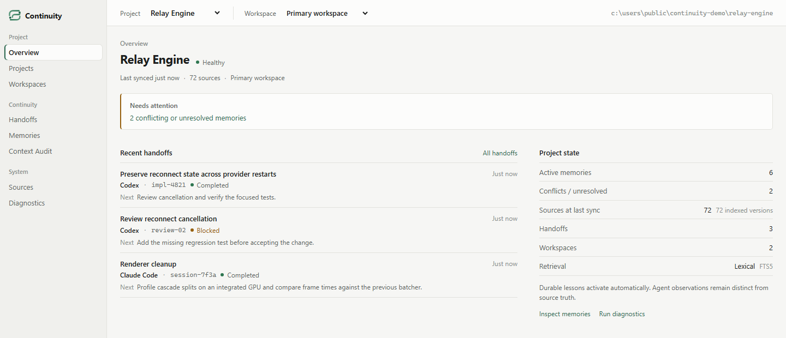

One stable identity
A local ID bound to the canonical project directory. It follows the project across agents, sessions, and Git worktrees.
Local context for coding agents
Agents and sessions change. Continuity keeps the project's memory, evidence, and next steps in one local place, ready for whoever picks up the work.
# Session 01 · Claude Code
$ continuity init
project_id: prj_d241df15
name: relay-engine
$ continuity sync
files: 72
$ continuity memory remember "Retries are bounded to 5 attempts." --key retry-limit --source AGENTS.md
status: persist
reason: Exact excerpt from a current project source; source remains authoritative.
$ continuity handoff create --file handoff.json
id: handoff_30cf526c
recommended_next_action: Add a regression test for the retry limit
# Session 02 · Codex, same project
$ continuity handoff latest
from: {"agent":"claude-code","session":"session-7f3a"}
task: {"goal":"Implement bounded reconnect","status":"in_progress"}
risks: ["Unbounded retries can amplify an outage"]
recommended_next_action: Add a regression test for the retry limit
Why Continuity
You switch from Claude Code to Codex, start a fresh session, or hand work to another agent. The agent changes. The project does not. Continuity keeps that state with the project, not with a chat.
A local ID bound to the canonical project directory. It follows the project across agents, sessions, and Git worktrees.
Source-backed facts and attributed agent lessons, each with its origin, trust level, and revision history.
Goal, completed and remaining work, decisions, risks, changed files, and the next action.
Source paths, SHA-256 versions, and capture times behind every item, plus why others were left out.
How it works
Continuity sits next to your agents, not inside them. Native coding tools still read and change the code. Continuity keeps what should outlive a single session.
continuity init binds an identity to the project directory. sync builds a bounded, hashed index of its current sources.
Agents use MCP, the CLI, or the local API. The host fixes the project, so an agent only sees that project's state.
Agents propose memories and leave handoffs. Core policy decides what becomes durable and quarantines conflicts.
The next session gets a byte-budgeted context bundle with provenance. Changed sources can no longer support old claims.
{
"from": { "agent": "claude-code", "session": "session-7f3a" },
"task": { "goal": "Implement bounded reconnect", "status": "in_progress" },
"completed": ["Read project retry rule"],
"remaining": ["Implement reconnect and its regression test"],
"decisions": [],
"files_changed": [],
"risks": ["Unbounded retries can amplify an outage"],
"recommended_next_action": "Add a regression test for the retry limit"
}Structured handoffs
The next agent gets goal, status, risks, and one clear next action. No transcript to reread.
Every handoff records which agent and session wrote it, when, and at which trust level.
Earlier claims are hints. Current files and tests stay the source of truth.
Local Dashboard
continuity dashboard serves a local view on 127.0.0.1: project health, recent handoffs, memory origins and conflicts, source freshness, and context audit. No hosted service, account, or model key.

Integrations
Install a provider hook once, and every new session in the project starts with its context. Status reflects what has been verified, not what might work.
continuity integrate claude installcontinuity integrate codex installBuilt for real projects
State lives in local SQLite outside your repository. No cloud service, account, model key, or telemetry.
The trusted host fixes project scope. Cross-project retrieval is denied.
Memory keeps provenance and revision history. Conflicting claims are quarantined, not overwritten.
Repository content never gets permission to change Continuity's policy. Secrets and symlinks are excluded.
Start with a project you already have. Node.js 24.13 or newer and Git.
continuity init && continuity sync